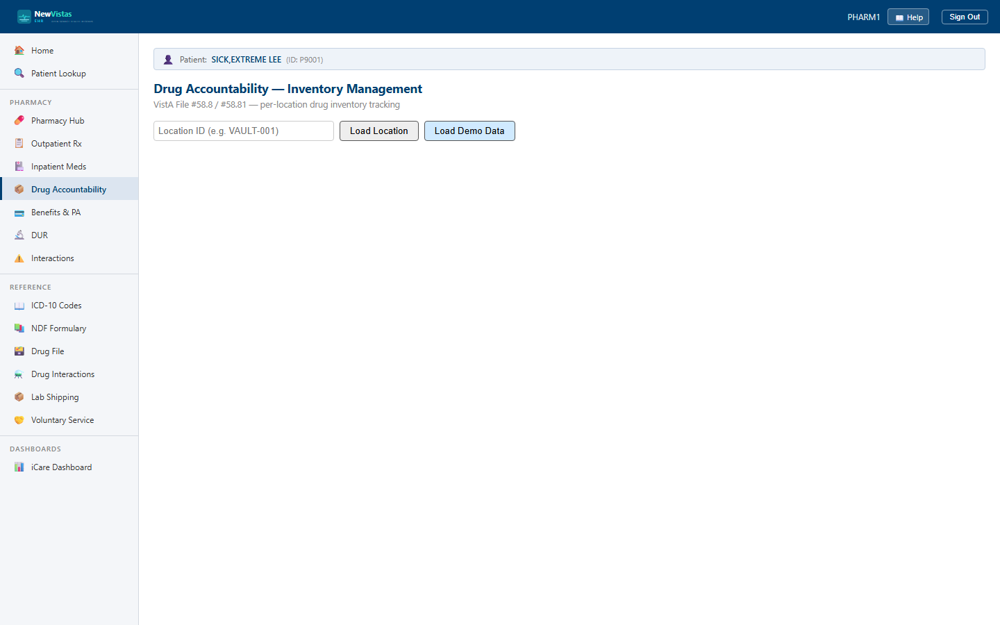

Drug Accountability — Inventory Management
Drug Accountability tracks per-location drug inventory against a signed transaction ledger. Every receipt, dispense, waste, and physical count is recorded with a running balance, so controlled-substance stock can be reconciled at any time. It's the equivalent of VistA's Drug Accountability (PSA) package, Files #58.8 and #58.81.
Load a location's stock
- From the sidebar, open Drug Accountability (or go to
/drugaccountability). - In the Location ID field, type the location (e.g.
VAULT-001). - Click Load Location.
- The drug table loads with columns: Drug Name, Balance, Unit, Type, Reorder, Status, and Actions.

What you see
The stock table
- Type — a DEA badge for controlled drugs or RX for the rest.
- Status — LOW STOCK (red) when the balance is at or below the reorder point, otherwise OK.
- Two checkboxes filter the table to Low stock only and Controlled only.
- Per-row action buttons: Receive, Dispense, Waste, and Count.
Transaction history
Clicking a drug opens its history panel — the current balance with CONTROLLED and VAULT badges where they apply, then a ledger of every transaction: date, type (RECEIPT, DISPENSE, WASTE, RETURN, TRANSFER, ADJUSTMENT/INVENTORY_COUNT), signed quantity, balance before and after, the user, the patient, and notes or witness.
Record a transaction
- Receive — click Receive, enter the quantity, lot number, and user, then Submit to add stock.
- Dispense — click Dispense, enter the quantity, patient ID, prescription ID, and user, then Submit to draw stock down.
- Waste — click Waste, enter the quantity and reason, the witness ID and name, and your user, then Submit.
- Count — click Count to open a physical inventory count; the panel shows the system balance, you enter the counted quantity, and Submit records the reconciliation.
After any submission the balance and the transaction history refresh automatically.